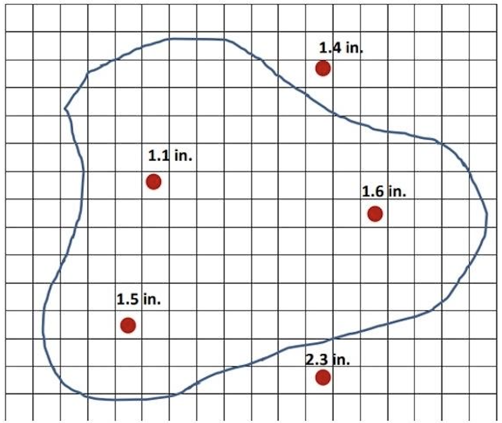

- / -
EMSC3025-6025
Final Exam
Total Points: 100
You are analyzing a medium-sized catchment (
Given data:
| Month | Precipitation (mm) | Runoff (mm) | Storage (mm) | Evaporation (mm) |
|---|---|---|---|---|
| Jan | 125 | 85 | +15 | ? |
| Feb | 142 | 98 | +22 | ? |
| Mar | 178 | 134 | +18 | ? |
| Apr | 92 | 68 | -8 | ? |
| May | 48 | 32 | -12 | ? |
| Jun | 28 | 15 | -6 | ? |
| Jul | 15 | 8 | -4 | ? |
| Aug | 22 | 12 | -5 | ? |
| Sep | 38 | 24 | -3 | ? |
| Oct | 68 | 45 | -2 | ? |
| Nov | 95 | 62 | +5 | ? |
| Dec | 108 | 72 | +12 | ? |
Tasks:
a) [6 points] Based on what you know from water cycle, calculate the monthly evaporation for each month. Show your calculations for at least for three months (one from each season: wet, transition, dry).
b) [5 points] Identify which months represent the wet season, transition period, and dry season based on the data patterns. For each season, identify which term in the water balance equation is dominant and explain why.
c) [4 points] After the measurements were done, we noticed the storage change in May might be uncertain. If the actual evaporation in May is known to be 28 mm, use the water balance equation to calculate the corrected storage change. Discuss what this correction implies about the catchment’s behaviour during this period.
d) [5 points] A neighbouring catchment of similar size (
A catchment has been instrumented with five rain gauges to monitor precipitation patterns. The gauge locations and measured rainfall for a specific storm event are shown in Figure 2.

Catchment information:
Tasks:
a) [3 points] Construct Thiessen polygons for all five rain gauges on the provided map. Show your construction lines and clearly mark the polygon boundaries. Explain the step-by-step process for creating Thiessen polygons.
b) [3 points] Calculate the area of each Thiessen polygon using the grid counting method. Show your calculations and express areas in both grid squares and
c) [3 points] Calculate the areal average precipitation for the catchment using the Thiessen polygon method:
d) [3 points] Compare your Thiessen polygon result with the simple arithmetic mean of all gauge readings. Discuss the differences and explain which method is more appropriate for this catchment, considering the spatial distribution of gauges and precipitation patterns.
e) [3 points] Identify potential limitations of the Thiessen polygon method in this case. What additional information would be helpful for improving the areal precipitation estimate?
Evaporation processes vary dramatically across different climatic and environmental settings. Understanding these variations is critical for water resource management.
Three contrasting environments:
Environment 1: Arid desert region
Environment 2: Humid temperate forest
Environment 3: Cold alpine tundra
Tasks:
a) [4 points] For each of the three environments, compare the likely relationship between actual evaporation (
b) [4 points] Explain how the three fundamental controls on evaporation (available energy, water availability, and atmospheric demand) operate in each environment. Identify which control is most limiting in each case and why.
c) [3 points] Evaluate which evaporation estimation method (Thornthwaite temperature-based, Penman combination, or water balance approach) would be most appropriate for each environment. Justify your choice by considering data availability, accuracy requirements, and method assumptions. Discuss the limitations of each method in the contexts where it is less suitable.
d) [3 points] At the catchment scale, direct measurement of evaporation is extremely challenging. Discuss three major obstacles to obtaining reliable catchment-average evaporation estimates, and explain how these obstacles vary between the three environments described above.
Figure below shows a storm hydrograph recorded at a stream gauging station following a significant rainfall event. The hydrograph displays the characteristic response of a small catchment to precipitation input.
Catchment characteristics:
Tasks:
a) [2 points] On the hydrograph, clearly identify and label the following components:
b) [3 points] Explain the hydrological processes responsible for each part of the hydrograph:
c) [4 points] Compare the three main theories of runoff generation:
d) [3 points] Based on the hydrograph shape and catchment characteristics, identify which runoff generation mechanism is most likely dominant in this case. Justify your answer by referencing specific features of the hydrograph and explaining how the catchment conditions support your conclusion.
e) [3 points] If this same rainfall event occurred during a drought period when antecedent soil moisture was only 20% of field capacity, predict how the hydrograph would differ. Discuss changes in peak discharge magnitude, time to peak, and overall hydrograph shape, providing your reasoning.
A contaminant spill has occurred near a multi-layered aquifer system, and you need to analyse groundwater flow paths and estimate travel times for risk assessment.
Aquifer system characteristics:
The system consists of four horizontal layers (from top to bottom):
| Layer | Thickness b (m) | Hydraulic Conductivity K (m/day) | Porosity n | Type |
|---|---|---|---|---|
| 1 | 8 | 25 | 0.32 | Sand |
| 2 | 3 | 0.8 | 0.28 | Silt |
| 3 | 15 | 18 | 0.30 | Sand |
| 4 | 5 | 0.05 | 0.22 | Clay |
Flow conditions:
Tasks:
a) [3 points] Calculate the equivalent horizontal hydraulic conductivity (
b) [3 points] Assuming horizontal flow dominates, calculate the horizontal hydraulic gradient and the Darcy velocity in each layer. If flow is primarily horizontal, in which layer would you expect the highest flow velocity?
c) [3 points] Calculate the transmissivity for the entire system. Then, assuming the system behaves as a single confined aquifer with this transmissivity, calculate the total volumetric flow rate.
d) [3 points] Estimate the travel time for a conservative (non-reactive) contaminant moving from the spill location to the downgradient boundary, assuming it follows horizontal flow paths. Assume an effective porosity of
A groundwater consultant has collected data from a new well field development site. Your task is to analyse the data to characterise the aquifer system and evaluate its management potential.
Field measurement data:
Well A (near recharge area):
Well B (downgradient, near discharge area):
Regional information:
Additional data:
Tasks:
a) [3 points] For both wells, calculate the hydraulic head at the screened interval. Determine whether this aquifer system is confined or unconfined, and justify your conclusion using the head measurements, pressure data, and well construction information.
b) [3 points] Explain the fundamental difference in storage mechanisms between confined and unconfined aquifers. Given that both storage mechanisms (water compressibility and aquifer matrix compressibility for confined; gravity drainage for unconfined) operate, why do we observe such different values of storativity (
c) [3 points] Based on the recharge and discharge data, evaluate whether the current pumping rate is sustainable. Calculate the annual water balance and determine if there is a storage deficit. If pumping continues at this rate, what might happen to the hydraulic heads and what are the long-term implications?
d) [3 points] This aquifer type (unconsolidated sand) differs significantly from other major aquifer types such as karst limestone or fractured crystalline rock. Compare the management challenges for: (i) contamination risk and remediation, (ii) sustainable yield estimation, and (iii) monitoring network design. For each challenge category, explain why the approach differs between unconsolidated and the other aquifer types you discuss.
Remote sensing via satellite missions has revolutionised our ability to monitor water cycle components at regional to global scales. Understanding what satellites actually measure versus what hydrological quantities they derive is essential for proper interpretation.
Three satellite missions for water monitoring:
Mission 1: GRACE (Gravity Recovery and Climate Experiment) and GRACE Follow-On
Mission 2: SMAP (Soil Moisture Active Passive)
Mission 3: SWOT (Surface Water and Ocean Topography)
Tasks:
a) [3 points] For each of the three missions (GRACE, SMAP, SWOT), clearly identify: (i) what physical property is directly measured by the satellite sensors, and (ii) what hydrological quantity is derived from these measurements using retrieval algorithms or models.
b) [3 points] Explain the physical principles that underlie each measurement approach.
c) [3 points] For each mission, compare satellite-derived estimates with traditional ground-based measurement methods. Identify two advantages and two limitations of the satellite approach relative to ground measurements. Consider factors such as spatial coverage, temporal resolution, accuracy, cost, and data accessibility.
d) [3 points] In practice, satellite data are often integrated with ground-based observations through data assimilation or hybrid monitoring strategies. Discuss when and why such integration is necessary. Provide a specific example of how you would combine GRACE total water storage data with in-situ groundwater well measurements to improve estimates of regional groundwater changes. What are the key challenges in this integration?